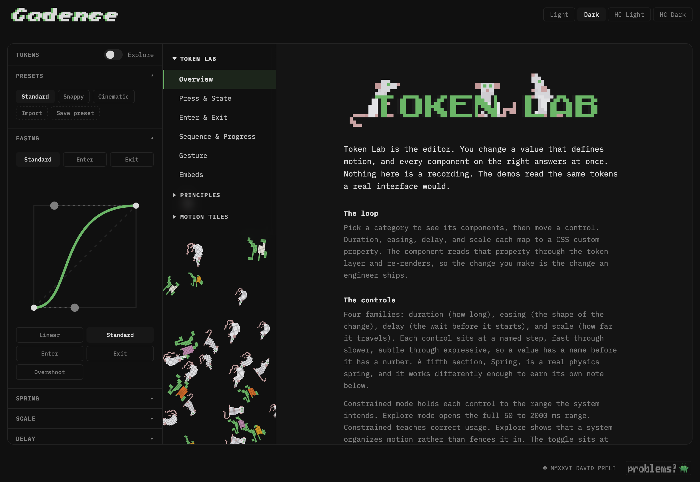
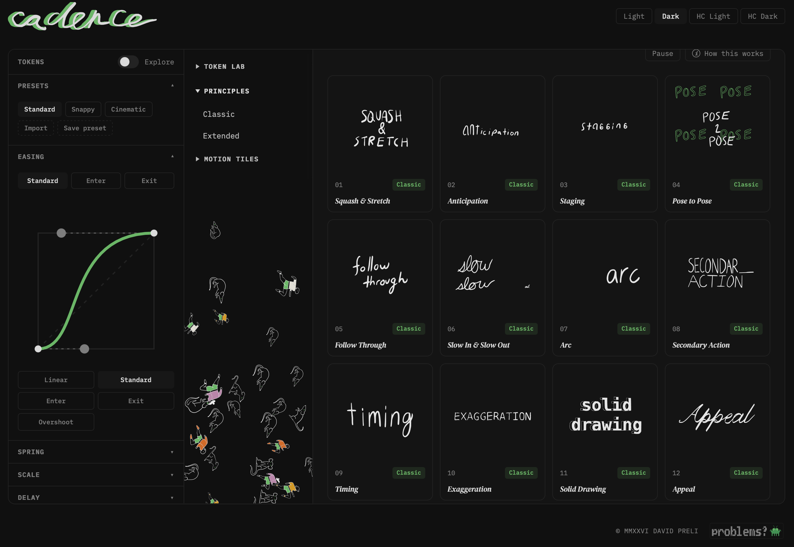
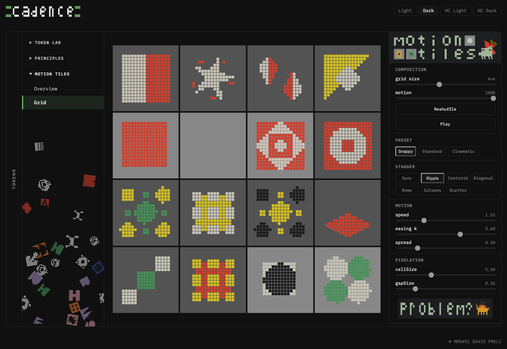

What I Built, What I Learned
Cadence: Case Study · Chapter 5
What I Built



Three tools sharing one token layer, live at cadence.davidpreli.com.
Token Lab is a live editor for the motion token set: four duration sliders with a scalar-driven duration-versus-distance plot, four editable easing slots with a draggable bezier visualizer, delays, scales, and the physics spring, whose settle-curve chart redraws the damped oscillator as its three sliders move. Every control updates consuming components in real time through the two-channel system, and the toolbar's own text runs on a named set of chrome type roles defined in one place. A Constrained / Explore toggle per section switches between semantically bounded ranges and the full range. Presets (Standard, Snappy, Cinematic) swap whole motion personalities; user presets persist to localStorage; token sets export as DTCG, flat JSON, a CSS :root block, or a ready-to-use Framer Motion module, and import back with a validating report. Five demos carry a coil toggle that swaps their bezier for the real spring in place, and an Embeds category runs the tokens into two canvases: a Rive plant timed by a React clock, and a shader-pixelated plant whose color plates chase the cursor on token timing. A live code view shows the actual Framer Motion calls with current values ticking in the comments.
The Principles Library is an 18-card grid, the classic 12 plus the extended 6. Each card expands to demonstrate two faces: a Rive illustration of the principle on one side and a live, token-driven UI demo on the other. Each expanded card hosts a Motion/UI toggle, a sourced quote, a pill naming exactly which tokens drive the demo, and a copy-link control that hands the principle's URL to the clipboard. All 18 demos respond to Token Lab edits.
Motion Tiles is the vocabulary at scale: a pooled mosaic of Rive tiles driven by one React clock, with population control, presets, stagger patterns, an adjustable grid, and a reshuffle. Plus a crab-based easter egg reachable through the logo.
Underneath: 39 custom React components and zero from a UI library. A generative background field in the nav column, its mark libraries loaded per section and painted per theme, drifting on the token clock. Four themes (light, dark, and two high-contrast variants), WCAG AA verified from computed luminance, not by eye. Reduced motion wired globally as a first-class state. Hash routing with deep links, including per-principle links that open as a spotlight modal over the grid. A bug-report pipeline from an in-app Rive button through a Cloudflare Worker to a GitHub issue. 578 tests (518 unit, 60 end-to-end against built output), including the gate that fails the build on hardcoded animation values. Deployed as a Cloudflare Worker with the Rive WASM runtime pinned to the site's own origin.
What I Learned
React stopped being a syntax problem the day the two-channel system made sense. Context is for ambient data many unrelated components need; props configure a specific instance; and a Context default of null with a thrown error beats a fallback object, because a fallback that silently does nothing is a bug you find weeks later. Fail fast was a phrase I knew from the lab bench. It turned out to mean the same thing here.
The idiomatic-first rule held every time I doubted it. Start with useState, with the plain read, with the pattern the documentation suggests, and optimize only when something measurable hurts. The one place I inverted this (assuming the tile count was Motion Tiles' performance cost, when measurement showed it was the per-tile scripts) cost a week of building toward the wrong fix.
Animation libraries have architecture, and it can bite. Framer Motion's projection tree is global; layoutId can corrupt animations three components away; and the fix that survives is sometimes the boring one, a CSS transition, chosen because it is outside the system rather than in spite of that. When the spring work later needed that dot animating in Framer Motion again, the diagnosis was precise enough to permit it: the hazard was the projection system, not animation, so the dot came back as a direct value animation and nothing broke. Debugging this without commits for eleven days taught me more about process than about Framer Motion: small commits, one hypothesis at a time, write down what was ruled out.
The dev server is not the product. The minifier rewrote a token format, a parser trusted the authored spelling, and production blanked while npm run dev stayed green. What I would do differently from day one: the error boundary before the first component, verification on built output from the first deploy-shaped milestone, and the test suite started in week two rather than week nine.
The argument held. I came in believing systematized motion was a compromise motion designers accept. Having now built the system end to end, tokens, presets, export pipeline, a field of fifty tiles retiming on one slider: the constraint was never the system. The system is what lets one person's timing judgment reach every component at once.
Companion: What This Demonstrates, the direct version for hiring managers.
- Live tool: cadence.davidpreli.com
- GitHub: github.com/StudioDavidPreli/cadence
- Portfolio: davidpreli.com